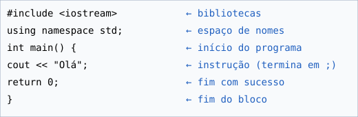

1. Introdução à programação C/C++
Conteúdos para estudo
C e C++ são linguagens compiladas: o compilador traduz o código-fonte num ficheiro executável. Para programar precisa de um compilador (g++) e de um editor/IDE (Code::Blocks, Dev-C++, VS Code).
Todo o programa tem a função main(), onde a execução começa. As instruções terminam com ; e os comentários usam // ou /* */.
#include <iostream>
using namespace std;
int main() {
// comentário de uma linha
cout << "Hello World" << endl;
return 0;
}#includeimporta bibliotecascoutescreve no ecrãreturn 0indica que terminou sem erros

Atividade 1 – “Hello World”
Instale/configure o ambiente, crie e execute o primeiro programa e identifique main(), instruções e comentários.
Os dados são guardados automaticamente neste navegador.